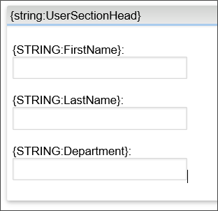
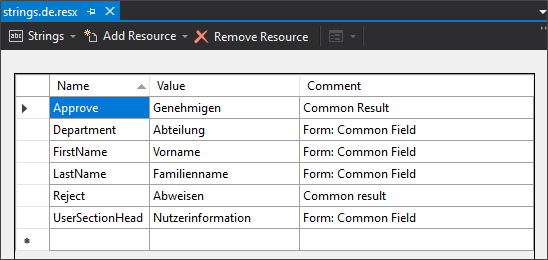
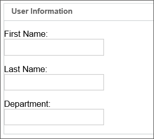
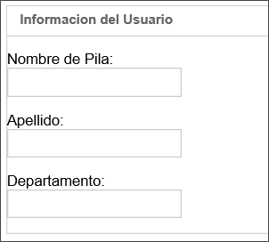
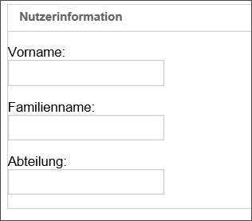

Do not modify the Resource.resx file; it will be overwritten on any upgrade/patch.
Do not modify the Resource.resx file; it will be overwritten on any upgrade/patch. The default language of Process Director is US English. All built-in system strings are stored in the \Program Files\BP Logix\Process Director\website\App_GlobalResources\Resource.resx file (a standard .NET resource file containing strings). To localize these to another language, create a separate file called Resource.[Culture].resx in the same folder (where [Culture] is the language/culture type, as specified in MSDN.). As an example, a file for German localization would be named "Resource.de.resx".This file will contain the translated strings. You only need to include the strings that have been translated into this file.
At runtime, the system will first try to find a string in the Resource.[Culture].resx file, and then it will try the default Resource.resx file. Since the Resource.resx file is the final fallback file in this hierarchy, this means that you can also create a customized US English resources file to change specific items of the Process Director user interface text by creating a Resource.en-US.resx file. Process Director will check that file first, and use any custom text from that file, before falling back to the main Resource.resx file for the standard UI text items.
It is also possible to completely localize the entire Process Director UI by making a copy of the Resource.resx your master translation file. This is, of course a very, very large file, and you would need to also add the custom strings you want to translate to each copy of this file.
Do not modify the Resource.resx file; it will be overwritten on any upgrade/patch. Each user is able to set their own culture/language in their profile, and the system will use the appropriate resx file to display the customized interface for their selected culture.
Once you have edited the RESX files, you will need to use the Locales custom variable to add the Cultures to Process Director.
See MSDN for the various "culture strings" (i.e. the portion of the file name between “Resource.” And “.resx”).
Edit the strings in each new Resource.[culture_string].resx file for the specific language.
Copy all the translated RESX files into the \Program Files\BP Logix\Process Director\website\App_GlobalResources\ folder.
Ensure that the [Culture] portion of the file name for the RESX file matches the pValue parameter used in the Locales custom variable.
In addition to the ability to localize Process Director's user interface, Forms can also be localized so that the same Form can be used for users from different cultures. Localized Forms will automatically display all of the Form field labels in the language appropriate to the user's culture.
Localizing Forms requires two steps:
Let's look at each step separately, along with some best practices to implement when performing each step.
Each time you add a field to a Form, you must create a new culture string for that field's label in the RESX file for each culture. When you do so, it would be wise to create a naming convention for Form Field strings. For example, for a common field, such a "First Name", you might create a resource string name like "FirstName".
In the /website/App_GlobalResources folder of your Process Director installation, create a master string file (a standard .NET RESX file) named "strings.resx" that contains all custom strings that you want to use. This file uses the default language for Process Director, which is US English, so there's no need to specifically create a US English-version RESX file, though you will need to create a language specific strings file for other languages, e.g., strings.es.resx for Spanish.
Every RESX file must have a resource string entry for the field's label, with a different value in each file. So, if you have a RESX file for US English, Spanish, and German the following entries would appear in each RESX file for the FirstName string:
You can access your own custom strings using a system variable such as {string:My_String} which will be replaced at runtime with the localized string. In the Form template, for each field label you'd like to customize, use a System Variable or Label control, or just type the system variable in plain text.

Additionally, you can use the comments portion of the RESX file to specifically identify which forms use each string.

In the example above, the implementers can, in addition to the form field labels, also add common activity results, such as "Approve" by using System Variables such as {string:Approve} that will be replaced with the localized version of the string "Approve" for the current user's culture. As you can see in this example, for fields have a comment that marks them as common form fields, while "Approve" and "Reject" are listed as common results.
Now, we can see how the Form will display for each culture:


